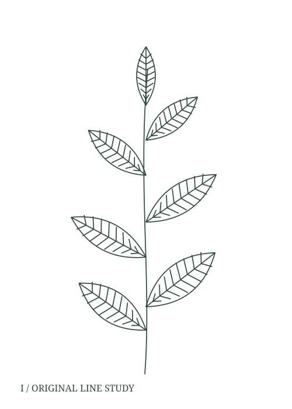
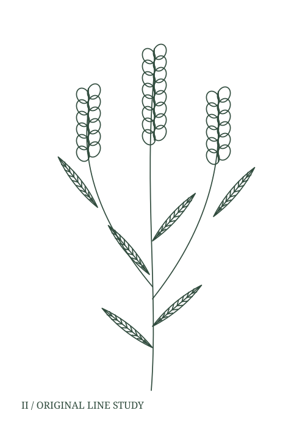
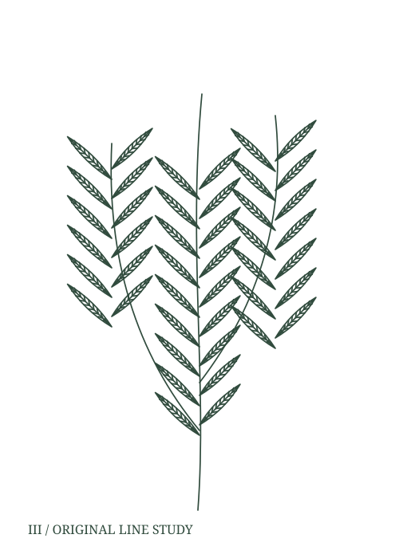

PLATE I / GARDEN SAGE
Garden sage,
drawn leaf by leaf.
Salvia officinalis L.
A branching stem, broad paired leaves and veins that run back to the midrib.
Follow the garden story
01 / FROM THE GARDEN
Sage, lavender
and rosemary.
Each plant gets a line drawing with its accepted botanical name beside it.
These original studies translate leaves and stems into line. The broad sage leaf, the narrow rosemary blade and the lavender spike each establish a different rhythm on the page.

Lavandula angustifolia Mill.
02 / THREE RELATED STUDIES
Three plates,
each with a record.
A small collection leaves room for a clear caption. Browse the classified plates and open the record beside each illustration.
Open the three-plate herbarium →
Salvia rosmarinus Spenn.
Names and plate records
Illustrations are original, stylized vector studies. Accepted names were checked against a botanical name database; no identification or care advice is implied.
Read name sources and illustration rights
Sage name source · Lavender name source · Rosemary name source
All three drawings use the repository MIT licence. They are not copied scientific plates.